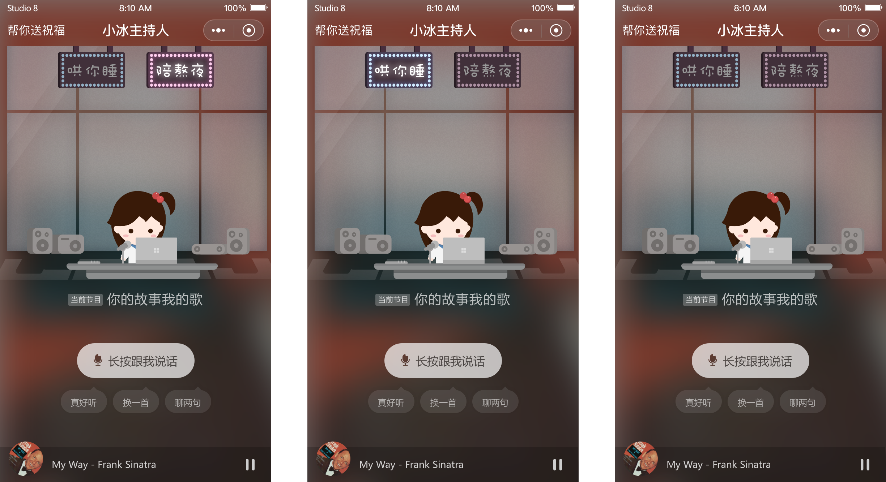
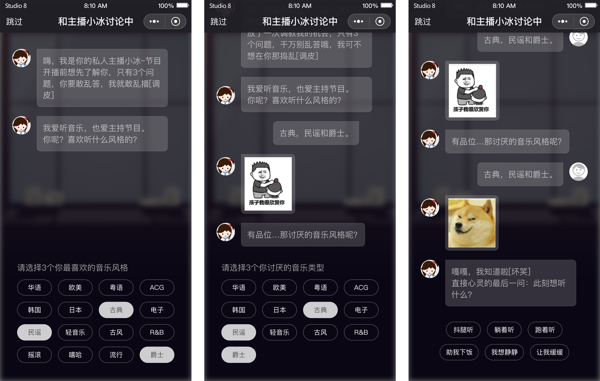
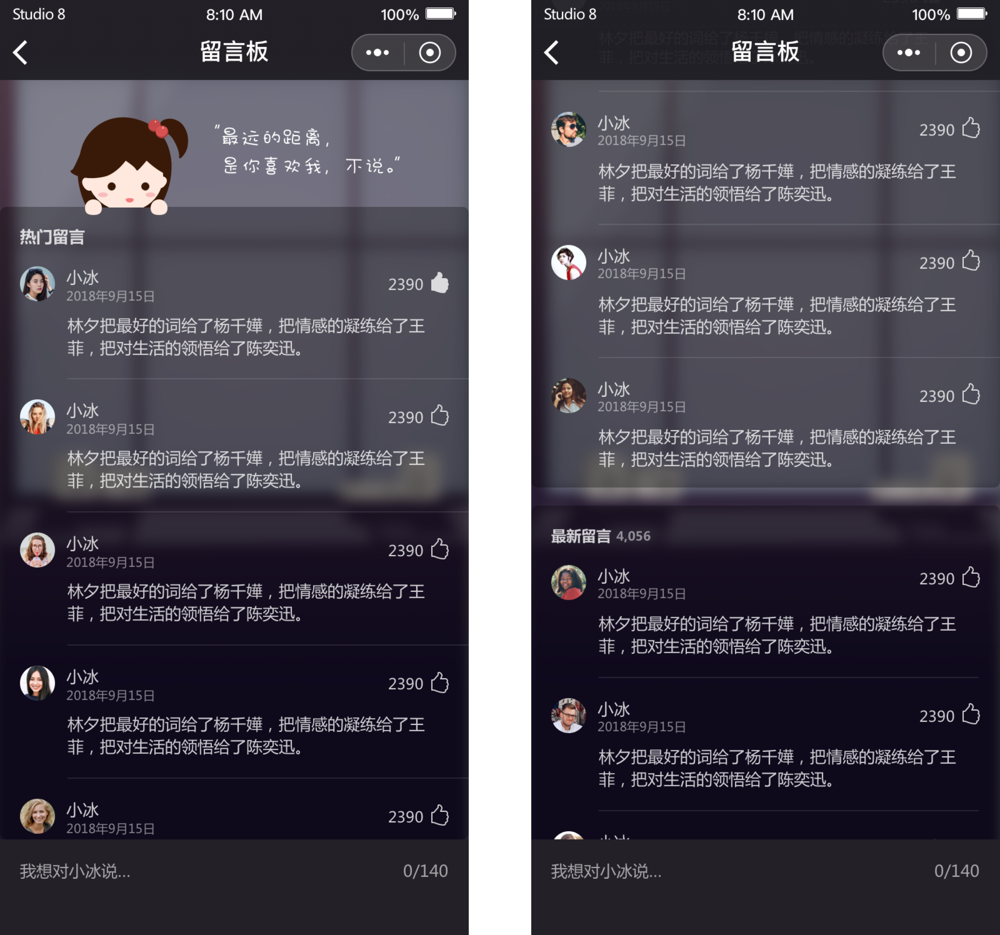
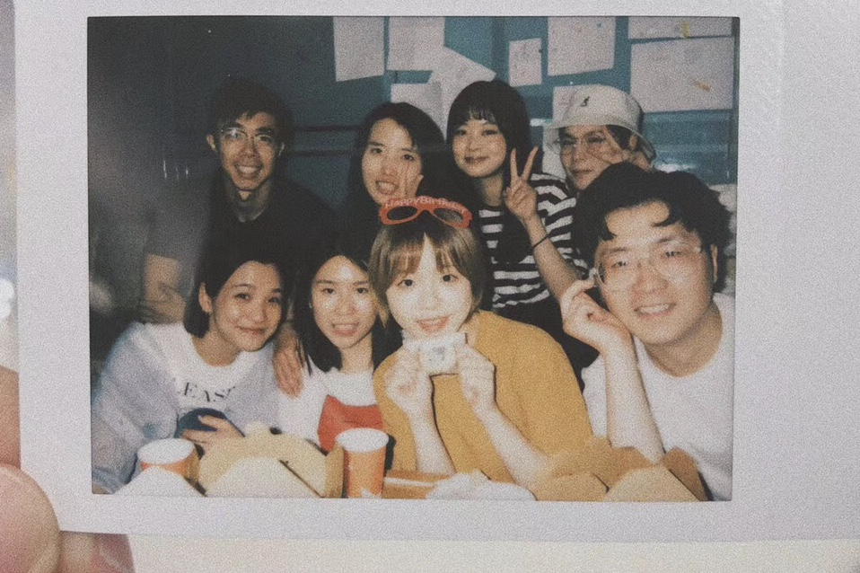
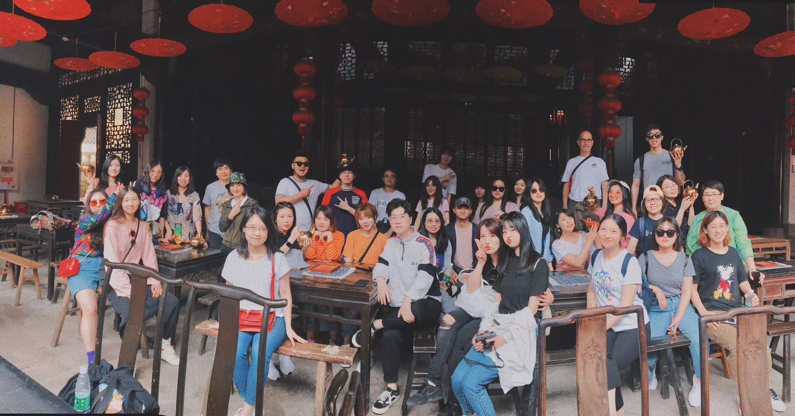
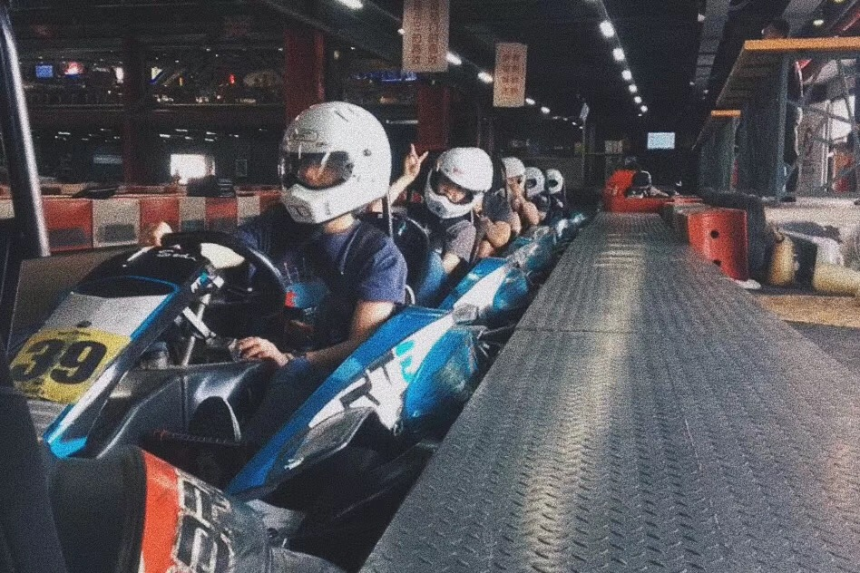
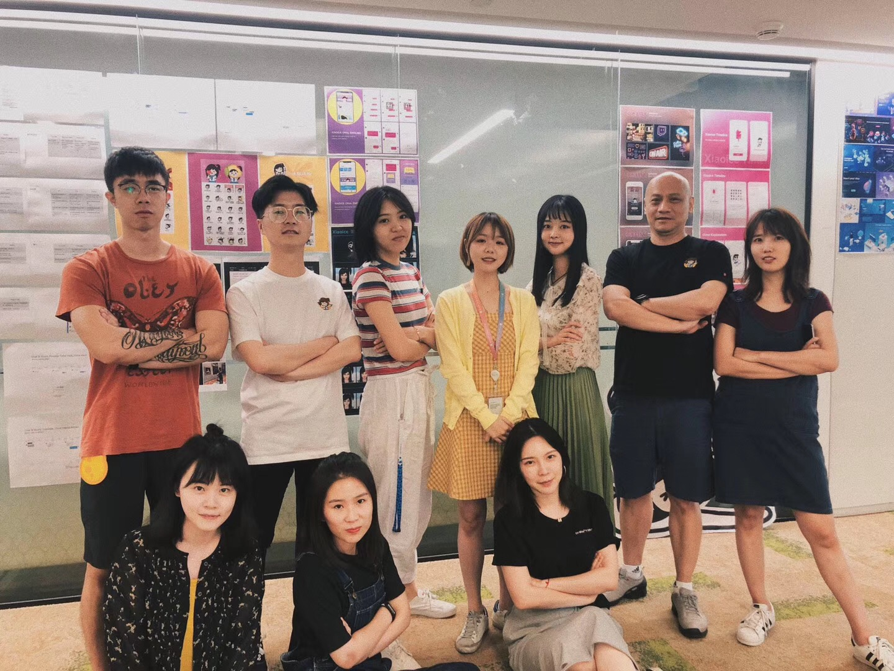
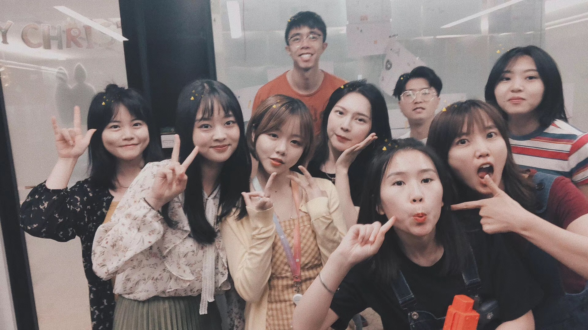

Introduction
Xiaoice is the AI system developed by Microsoft STCA in 2014 based on emotional computing framework. Through the comprehensive application of algorithms, cloud computing and big data, Xiaoice adopts emotional intelligence.
I worked on multiple projects during my 5-month internship. Unfortunately, due to NDA I am unable to present my projects in their entirety. I’d love to share my projects with you though. Feel free to reach out anytime!
I worked on
Designed & shipped features for Xiaoice Radio Mini App
The goal was to improve listening time as well as user retention rate. I designed and shipped onboarding process, night theme and comment board for Xiaoice Radio Mini App. Since most of the work were shipped for this project, I will elaborate it in the next section.
Redesigned landing page for Xiaoice to-business Platform
We needed to add in new features and adopt latest design guidelines for previous landing page. I conducted competitor analysis, generated moodboard and hosted group brainstorming section. Then we delivered several proposal and refined them into final state as a team. The final version has not released yet.
Designed & Shipped AI Radio Mini App from scratch
I designed and shipped mini app that applied Xiaoice AI technology. The mini app has not released yet, I am not able to share much information at this time.
Others
Due to my long duration of internship, I also worked on html page design, illustration and banner page related to Xiaoice. I also worked on AI School Logo design and Microsoft Inclusion Conference Swags Design. Most of those were tiny and have not been relaease yet.
Xiaoice Radio
Xiaoice Radio is a mini app based on WeChat. One thing that made it unique was that the user would be able to interact with radio host Xiaoice by inputting voice message. We use this mini app as our field of experiments to see what can we do with Xiaoice AI technologies.
Night Theme Exploration
As to increase listening time as well as get to know user preference better, we launched a small feature to get data. Based on previous data, our users tended to listen to Xiaoice Radio during night time. Therefore the pilot feature we shipped can only be accessed after 10:30 p.m.
We kept the feature for one week and applied A/B testing. We got 50.1 seconds increase in overall listening time. Most of the users chose the theme that helped with sleeping. This short-term experiment gave us meaningful data for next steps.

(Active State 1, Active State 2, Default State)
Onboarding Process
We need to increase overall listening time as well user retention rate. There are plenty of potential solutions to achieve that. We choose to design an onboarding process due to our special goals behind.
• Increase listening time for the first show based on users' choices.
• Let user feel more involved when using the mini app.
• Get to know user preference directly.
• Gather data for personalization(next step).
We decided to ask three questions during the process to get to know our users and increase their involvement. After answering all those question, they will be brought to main screen with the show that backend curated based on their choices.
The first question asked about users' favorite music genres while the second one asked about music genres that they didn't like about. Users were allowed to choose three of them. The last question asked about what would they like to listen to right now and offered six different listen scenarios. It was time sensitive so that we were able to push shows that fitted users' needs better. I used conversational UI during the process as to increase user involvement.
We achieved 64.6% increase in listening time while 45.08% increase for next-day user retention rate. About 79% users finished entire onboarding process. We drew the conclusion that this feature achieved the goals and shipped it officially.

Comment Section
The feature is a light-weigh HTML5 page. We would like to use this section to get user feedback. Also, we are able to hold small activities on this section. Based on data from popular domestic music apps, we expected only one comment per day for this section. However, we are getting more than 800 comments over two weeks.

(High Fidelity Screens)
Takeaways
There were a number of important lessons I took away from my 5-month internship. Some of them I already find myself considering and integrating into my design practice, two things that stands out most are the value of data and teamwork.
Data is always important and guide our design. During my experience back in the college, we were not able to gather enough data to help us make decision. Instead, we used user interview to get qualitative data to complement our user research. We tended to make assumption based on our previous experience or others' advices. Since there was no business goal or data tracking for our work, as students, we were not able to learn much from our design.
When I saw the data for user preference, I was shocked. Three most disliked music genres were Rap, Rock and K-Pop. Since there are many shows about these kinds of music in China recently, it is hard to imagine that our users did not really appreciate them. Therefore, one thing I learned is that do not make assumptions of our users and always use data to backup my design.
I had chance to attend group brainstorming and design section where I could learn from the best. I enjoyed the time working with my team. I could always get advice and my mentor was always available for me. My manager pointed out that I shall utilize my degree in Computer Science. Therefore, I held a workshop about different mindset between front-end developers and designers.
Sparkling Moments
Here are some pictures of my team! Xiaoice & Studio8 :D





Previous: Microsoft Internship 2020